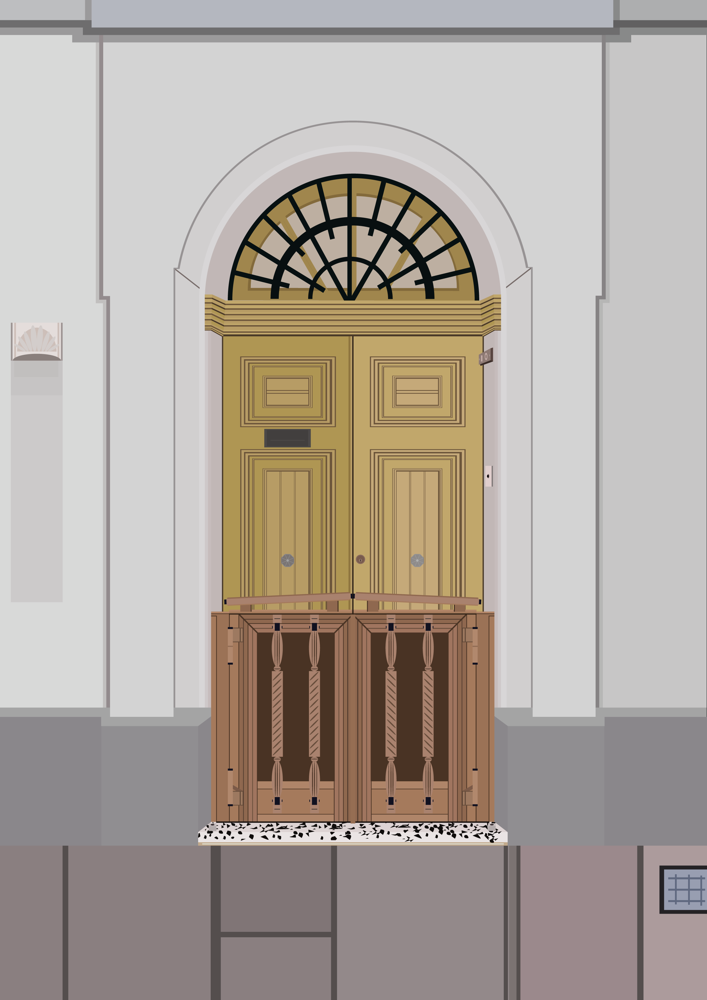
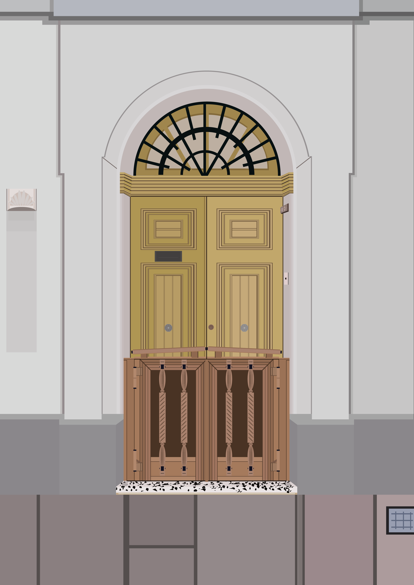

This is a website which is intended to show some of my favorite assignments for DGA1019 and DGA1020, this website is very basic in terms of structure. It only contains a title, headins, paragraphs, images, links and some CSS styling.
This task required four images, two which are low key and two which are high key. The theme required was christmas oriented, specifically titled as "Elisabethan or Carolean Christmas - Celebrating the past or the new?". This task was my favorite as I got to practice photography and lighting within a studio setting, as well as coordinate with my peers to achieve good images.
Here are some of the images I took for this project


This task required that we traverse around Maltese towns, looking for 25 unique doors. Then we sketched the general shapes of a chosen door on a piece of paper, eventually we began designing a vector image of the door in Adobe illustrator.
Below are three images which include the sketch, the actual door and the final illustration.

 
